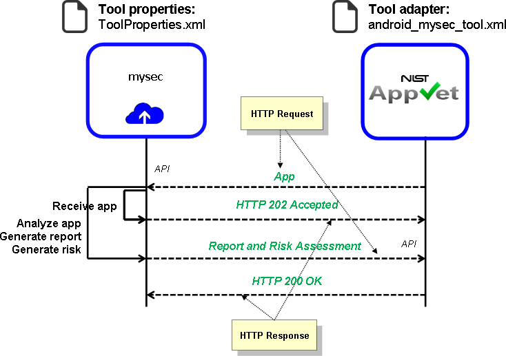

Installation Readme
Installing an AppVet tool requires two main steps:
- Step 1. Configure AppVet: AppVet must be configured to connect to and
interact with the (online) tool.
- Step 2. Install and configure the tool: The tool should be installed
and configured to connect to and interact with AppVet.
IMPORTANT! If the tool already exists online and is accessible to
AppVet, then AppVet should be configured to connect to that existing tool and
Step 2 should be skipped.
Figure 1. shows the distributed communication between AppVet and an online tool called mysec.
Here, AppVet is configured to communicate with mysec using
tool adapter android_mysec_tool.xml. Typically, this tool adapter
will be provided pre-configured by the vendor and defines parameters about the
tool, its URL, and the data that should be sent to it when submitting an app
for testing. However, some parameters of
android_mysec_tool.xml may need to be modified for your specific
implementation (e.g., if you are installing mysec locally and
need to change the URL of the tool). On the tool side, the tool will have a
properties file called
ToolProperties.xml that defines data to configure
the tool and also defines data about how to connect to and authenticate with
AppVet.

Figure 1. AppVet-tool protocol.
As shown in Figure 1, the communication between AppVet and a tool is asynchronous.
When an app is sent to a tool from AppVet, the sends an acknowledgement back to
AppVet before testing the app. After the tool is done testing the app, it authenticates
with AppVet and submits a report and risk assessment for the app. After AppVet
receives the report and risk assessment, it returns an acknowledgement back to
the tool.